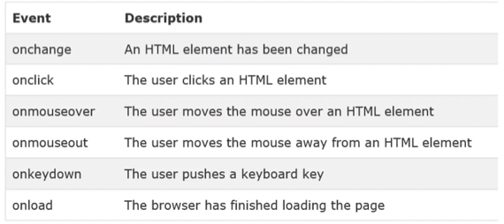

충남대학교 컴퓨터공학과 이규철 교수님의 "웹 프로그래밍" 강의를 필기한 내용입니다.
다소 잘못된 내용과 구어적 표현 이 포함되어 있을 수 있습니다.
이것도 몰랐던거만 캐치해보자고
- JavaScript는 ECMAScript 라고 부르기도 한다
<script>태그는</body>위에 있어야 한다 - script를 처리할때는 html이나 css등을 처리하지 않고 script만 처리하기 때문에 html이 전부다 로드되어있지 않으면 에러가 날 수도 있음 - 따라서 html을 전부 로드하고 script를 처리해주기 위해 body의 닫는 태그 위에 작성해주는 것document.write()함수는 페이지가 로드되고 나서 호출되면 새로운 페이지에 띄우기 때문에 기존의 것이 다 사라지게 된다 - event같은걸로 호출하면 페이지에 있던게 다 지워질 수도 있다document객체는 브라우저 화면에 대한 조작을 담당하는 객체이고,window객체는 브라우져 화면뿐 아니라 브라우저 전체에 대한 조작을 담당한다 -alert()가window의 함수인 것이 이것때문임window.print()메소드는 화면출력이 아니고 프린터기로 출력하는 것을 의미한다var와let의 차이점은var의 경우에는 변수 중복 선언시에 이전의 변수를 그대로 사용하게 되지만let은 그렇지 않고 에러가 나게 된다var x = 3; var x;이렇게 해줘도 x는 여전히 3의 값을 가지게 되는 것
Literal은 숫자나 문자열처럼 어떤 ‘값’을 의미한다- 식별자는 다른 언어와 동일하게 숫자로 시작할 수 없다
- 문자열과 문자열이 아닌 것을 더하면 앞에서부터 덧셈를 하되 문자열을 만나면 문자열이 아닌 놈들을 전부 문자열로 변환함 - 문자열 형변환으로 사용하더라
- 예를들면
”5” + 2 + 3의 결과는523이고 2 + 3 + "5"의 결과는55이다
- 예를들면
- 비트 연산자는 32bit 형태에서 진행된다
- ES6 부터
**연산자로 제곱연산을 지원한다 - 함수 호출은 다음의 세 경우의 수로 이루질 수 있다
- 이벤트 콜백
- JS코드로 호출했을때
Self-invoke: singleton design pattern에서처럼(function(){})()로 스스로 호출되었을 때
- String, Number, Boolean객체를 new로 생성하지 않아도 해당 클래스에서 제공하는 메소드를 사용할 수 있다
- event는
onload처럼 브라우저가 발생시키는 것과onclick처럼 사용자가 발생시키는 것이 있다 - 그리고 button태그의 onclick attribute처럼 html에
이벤트이름=“JS코드”속성-값 쌍을 만들어서 넣어줄 수도 있다- MDN에서도 확인할 수 있지만 대표적인 몇개 아래에 정리되어 있다

- 숫자와 문자열로 표현된 숫자를 비교하는 것이 가능하다. 하지만 숫자가 아닌 문자열처럼 숫자의 형태가 아닌 것의 경우(NaN)에는 항상 false가 나오게 된다
- 예를들면
2 < "12"의 결과는 true이다. - 하지만
2 < "dude"의 결과는 false가 된다
- 예를들면
- 문자열의 비교는 다른 언어처럼 인덱스별로 ascii코드를 비교한다
"mate" < "dude"의 결과는 m이 d보다 작으므로 true이다"2" < "12"의 결과도 2가 1보다 크기 때문에 false이다
- 나중에 까먹을게 분명하지만
Number(),String(),Boolean()을 통해서 형변환이 가능하다 - switch문에서는
===의 strict comparison을 사용한다 -“0”을 넣으면case 0:에는 걸리지 않는다는 소리 - TypeScript에서 되는지는 모르겠는데 object에 대해서 for-in문을 사용할 수 있다
const obj = {key1: "1", key2: "2"};
for(let key in obj) {
console.log(obj[key]);
}- 위 코드의 결과는
1(줄바꿈)2가 나온다 - 만약에 된다면
Object.entries()를 안써도 된다는 사실 - 아마 string index를 object type에 지정해줘야 가능하지 않을까
- for-of문은 iterable의 경우 사용할 수 있으며 어디선가 iterator가 무효화되어도 사용할 수 있다는 것을 본것 같다
- continue문 뭔가 찝찝해서 안쓰게 되는데 continue를 만나면 다음으로 넘어간다 - 전통적인 for문의 경우 I++가 수행된다는 사실
- JS에는 C언어에서의 GOTO와 유사한 기능이 있다 -
Label기능 - 얘는 label을 지정하고 break 라벨이름 이나 continue 라벨이름 이런식으로 적으면 해당 label의 context를 빠져나가게 된다
labelName:
while(true) {
for(let i = 0; i < 100; i++) {
if(i === 10) { break labelName; }
}
}- 위 코드의 경우에 i가 10이 되면 for문 하나를 빠져나오는게 아니고 while전체를 빠져나오게 된다
labelName: {
console.log("my");
console.log("god");
break labelName;
console.log("holy");
console.log("moly");
}- 이놈의 경우에는 my-god 만 출력되고 해당 블럭을 빠져나오게 된다